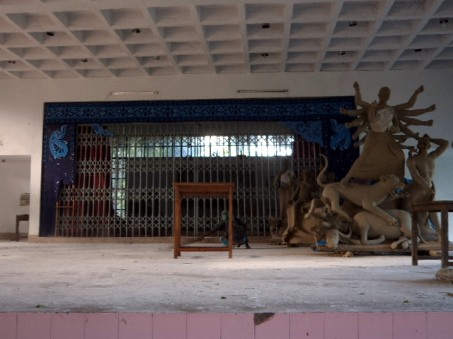

প্রচ্ছদকাহিনী :
পরম্পরা :
উৎসব :
song - গীত :
আনুষঙ্গিক :
চিত্রকলা :
ট্রেভেলগ :
স্বাস্থ্য :
অন্তরে অন্দরে :
মহানবমী
সন্ধি পূজা
অষ্টমীর শেষ ২৮ মিনিট এবং নবমী তিথির প্রথম ২৮ মিনিট - মোট ৪৮ মিনিট ধরে হয় সন্ধিপুজা। এসময় দেবীকে চামুণ্ডা হিসেবে পূজা করা হয়। রাক্ষসরাজ রাবনকে বধ করার জন্য শক্তিশালী চামুণ্ডার পূজা হয়। নারীকে অপহরণ করতে চেয়েছিল রাবণ। এইসময় ১০৮টা নীলপদ্ম দিয়ে পূজা করা হয়, ১০৮বার নামজপ করা হয়।
নবমীতে মহাস্নান এবং ষোড়শোপচারে পূজা হয়।
বলি - অন্তরের পশুভাব ত্যাগ করার জন্য রূপক অর্থে বলি দেয়া হয়।বলির মাধ্যমে ভক্তেরা রিপু নিবেদন করে। শাক্তমতে পশুবলি হয়, বৈষ্ণবেরা ভগবানকে পুরুষ হিসেবে পূজা করে, তারা বলির বদলে উপহার দেয়। সাত্ত্বিক বলি ও রাজসিক বলি এই দুই মিলে অনুকল্প বলি হিসেবে কলা বলি দেয়া হয় রামকৃষ্ণ মিশনে। বলির উদ্দেশ্য জ্ঞান, বৈরাগ্য, ভক্তি বৃদ্ধি করে পুণ্য বাসনা পূরণ ।
হোম বলির পর ঘি এবং বেলপাতা দিয়ে হোম হয়। এর মাধ্যমেই নবমীর পূজা শেষ হয়।
বিজয়া দশমী এদিন দেবীকে অন্যান্য দিনের মতো স্নান করানো হয়না। ষোড়শোপচারের পরিবর্তে পূজা হবে দশ উপচারে। পাদ্য, অর্ঘ, ধূপ , দীপ দেয়া হলেও বস্ত্র, গয়না ইত্যাদি দেয়া হয়না। পুষ্পাঞ্জলি দেয়া হয় এবং মন্ত্র মনে মনে পাঠ করা হয়। এসব আচার পূর্বাহ্নে হয়। সন্ধ্যাবেলা বিসর্জন হয়। বিসর্জনের নিয়ম প্রতিমা স্রোতের জলে ফেলা, কিন্তু রামকৃষ্ণ মিশনের নিজস্ব পুকুরে বিসর্জন হয়।
প্রথমে দর্পণে দেবীকে বিসর্জন করা হয়, এরপর ঘাটে প্রতিমা বিসর্জন হয়। নিরাকার প্রতিমা আকার ছেড়ে আবার নিরাকারে হৃদয়ে আসবে, তাই হৃদয়ের প্রতীক ঘটে করে শান্তিজল আনা হয় । চারদিকে শান্তিজল ছিটানো হয় আসুরিক ভাব বিনষ্ট করে দৈবী ভাব আনার জন্য। এসময় সমস্ত প্রকৃতি ও মানুষের শান্তি কামনা করা হয়। বিসর্জন দেখায় সৌভাগ্য লাভ হয় ভক্তবৃন্দের।
সন্ধি পূজা
অষ্টমীর শেষ ২৮ মিনিট এবং নবমী তিথির প্রথম ২৮ মিনিট - মোট ৪৮ মিনিট ধরে হয় সন্ধিপুজা। এসময় দেবীকে চামুণ্ডা হিসেবে পূজা করা হয়। রাক্ষসরাজ রাবনকে বধ করার জন্য শক্তিশালী চামুণ্ডার পূজা হয়। নারীকে অপহরণ করতে চেয়েছিল রাবণ। এইসময় ১০৮টা নীলপদ্ম দিয়ে পূজা করা হয়, ১০৮বার নামজপ করা হয়।
নবমীতে মহাস্নান এবং ষোড়শোপচারে পূজা হয়।
বলি - অন্তরের পশুভাব ত্যাগ করার জন্য রূপক অর্থে বলি দেয়া হয়।বলির মাধ্যমে ভক্তেরা রিপু নিবেদন করে। শাক্তমতে পশুবলি হয়, বৈষ্ণবেরা ভগবানকে পুরুষ হিসেবে পূজা করে, তারা বলির বদলে উপহার দেয়। সাত্ত্বিক বলি ও রাজসিক বলি এই দুই মিলে অনুকল্প বলি হিসেবে কলা বলি দেয়া হয় রামকৃষ্ণ মিশনে। বলির উদ্দেশ্য জ্ঞান, বৈরাগ্য, ভক্তি বৃদ্ধি করে পুণ্য বাসনা পূরণ ।
হোম বলির পর ঘি এবং বেলপাতা দিয়ে হোম হয়। এর মাধ্যমেই নবমীর পূজা শেষ হয়।
বিজয়া দশমী এদিন দেবীকে অন্যান্য দিনের মতো স্নান করানো হয়না। ষোড়শোপচারের পরিবর্তে পূজা হবে দশ উপচারে। পাদ্য, অর্ঘ, ধূপ , দীপ দেয়া হলেও বস্ত্র, গয়না ইত্যাদি দেয়া হয়না। পুষ্পাঞ্জলি দেয়া হয় এবং মন্ত্র মনে মনে পাঠ করা হয়। এসব আচার পূর্বাহ্নে হয়। সন্ধ্যাবেলা বিসর্জন হয়। বিসর্জনের নিয়ম প্রতিমা স্রোতের জলে ফেলা, কিন্তু রামকৃষ্ণ মিশনের নিজস্ব পুকুরে বিসর্জন হয়।
প্রথমে দর্পণে দেবীকে বিসর্জন করা হয়, এরপর ঘাটে প্রতিমা বিসর্জন হয়। নিরাকার প্রতিমা আকার ছেড়ে আবার নিরাকারে হৃদয়ে আসবে, তাই হৃদয়ের প্রতীক ঘটে করে শান্তিজল আনা হয় । চারদিকে শান্তিজল ছিটানো হয় আসুরিক ভাব বিনষ্ট করে দৈবী ভাব আনার জন্য। এসময় সমস্ত প্রকৃতি ও মানুষের শান্তি কামনা করা হয়। বিসর্জন দেখায় সৌভাগ্য লাভ হয় ভক্তবৃন্দের।
অন্যান্য প্রাসঙ্গিক অনুষ্ঠান
সিঁদুরখেলা
আরতি - বিভিন্ন স্থানে তামসিক বা রাজসিক ভাবে আরতি হলেও এখানে হয় শাস্ত্রীয় নিয়মানুসারে। বেদান্তে ক্ষিতি, অপ, তেজ, মরুৎ, ব্যোম এই পাঁচটা জিনিস দিয়ে সমস্ত জগত তৈরি বলা হয়েছে। শরীর ও এমন ৫টি উপাদানে তৈরি (প্রাণ , অপান, ব্যান, উদান, সমান।)।
আরতি এই পাঁচটি উপাদান দিয়েই হয়।
আরতির প্রতীক
ক্ষিতি- ফুল,
অপ-জল (শংখে করে দেয়া হয়)
তেজ- কর্পূরের প্রদীপ/ পঞ্চপ্রদীপ
মরুৎ- চামর, চামরী গাইয়ের লেজ দিয়ে বাতাস করা হয়।
ব্যোম – কাপড় ব্যবহার করা হয়।
এরপর সাষ্টাঙ্গে প্রণাম করা হয়।
এছাড়া প্রত্যহ সারাদিনব্যাপী পূজার্চনা, ভজনসঙ্গীতাদি ও আরাত্রিক অনুষ্ঠিত হয়।
সাক্ষাৎকার গ্রহণ ও অনুলিখন মাহবুবা চৌধুরী

বিবাহিতরা স্বামীর মঙ্গলের জন্য একে অন্যকে সিঁদুর দান করেন। অনেক জায়গায় এটা ঘটা করে পালন করলেও রামকৃষ্ণ মিশন সন্ন্যাসীর আশ্রম বলে সবকিছু ভাবগাম্ভীর্যের সাথে হয়। অনাড়ম্বর ভাব থাকে সর্বত্র। আরতি - বিভিন্ন স্থানে তামসিক বা রাজসিক ভাবে আরতি হলেও এখানে হয় শাস্ত্রীয় নিয়মানুসারে। বেদান্তে ক্ষিতি, অপ, তেজ, মরুৎ, ব্যোম এই পাঁচটা জিনিস দিয়ে সমস্ত জগত তৈরি বলা হয়েছে। শরীর ও এমন ৫টি উপাদানে তৈরি (প্রাণ , অপান, ব্যান, উদান, সমান।)।
আরতি এই পাঁচটি উপাদান দিয়েই হয়।
আরতির প্রতীক
ক্ষিতি- ফুল,
অপ-জল (শংখে করে দেয়া হয়)
তেজ- কর্পূরের প্রদীপ/ পঞ্চপ্রদীপ
মরুৎ- চামর, চামরী গাইয়ের লেজ দিয়ে বাতাস করা হয়।
ব্যোম – কাপড় ব্যবহার করা হয়।
এরপর সাষ্টাঙ্গে প্রণাম করা হয়।
এছাড়া প্রত্যহ সারাদিনব্যাপী পূজার্চনা, ভজনসঙ্গীতাদি ও আরাত্রিক অনুষ্ঠিত হয়।
সাক্ষাৎকার গ্রহণ ও অনুলিখন মাহবুবা চৌধুরী